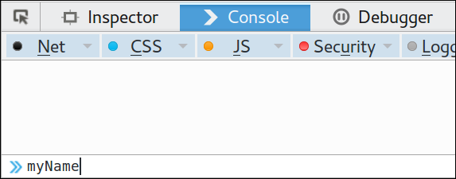
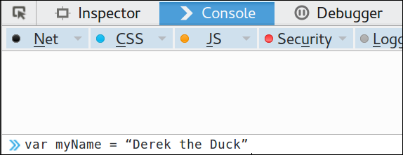
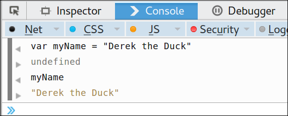
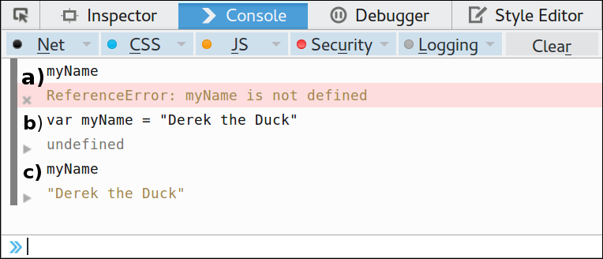
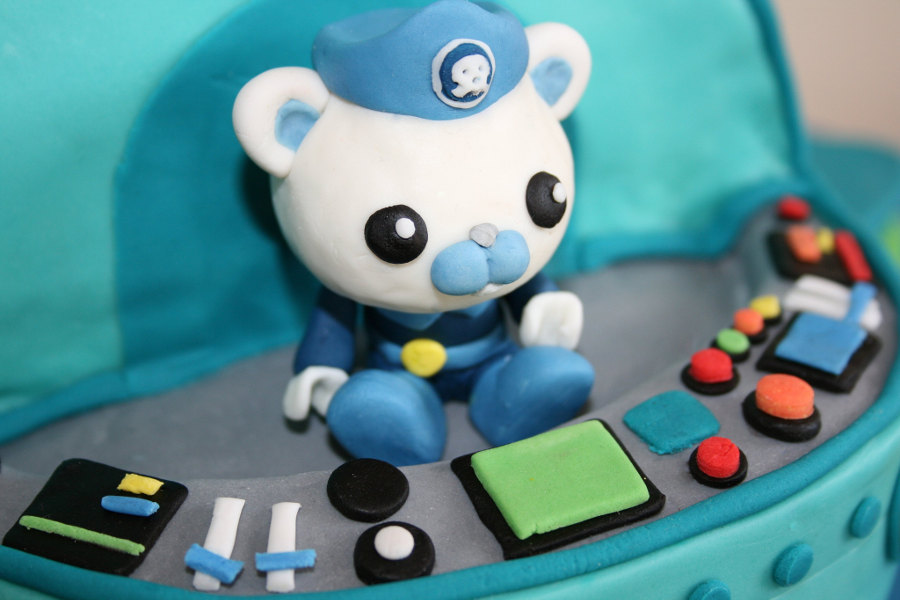

Made by Mick Fuzz and as a contribution to be remixed for Clubs by Mozilla.
avascript is one of the key parts of the Web (together with HTML and CSS). Without it pages would be
pretty static as JS creates interactivity. We can say that Javascript helps make the web dance.
45 minutes to an hour
Preparation
First do the activity on your own to become familiar with it.
Keywords - variable, value, assign, code, text coding
Split learners into groups of 2 or individuals if there enough computers explain that the challenge is to find out what is happening
under the hood of the browser. We are entering a new world which is used by most people but also hidden knowledge.
Ask individuals / groups to follow these instructions:
Open Firefox (or other browser)
Press F12 to bring up some tools
Click on Console
Press F12, find the Console (see image), type myName into the Console and press the Enter key

Press F12, find the Console (see image), type myName into the Console and press the Enter key.
Give the students the following info:
The console is normally used to find out errors on our page.
Here we will use it to find out more about Javascript.
Now type the following (you can change the name to your own) and press Enter.

Assign a value of a name to the variable myName
What we just did in the language of coding was to give a value of "Derek the Duck" to a new varible called my name. Next try this:
Now type and enter myName again.
What are the results?

Have a look at the results.
What did this teach us about Javascript and variables?
These lines of code create and then print out a variable. A variable is a way of storing a number, name or some other information. You can think of it as a space in the memory of computer or phone. When you save a number in your phone, it is being kept as a variable.
Let's look at our lines of code.

What just happened?
In a We asked to be shown the value of the “variable” called myName. There was an undefined error - because we haven’t created a variable called myName yet.
In b we do create a variable of myName and give it a value. In my example this is like the instruction “Set the variable myName to be a value of Derek the Duck ”.
In c we can see that this has worked. We Type the name of the variable and the value appears on the Console.
This video sums it all up pretty well too!
25
min
Remixing a page: Custard Pies Tour
But there is a problem! Katy has not decided the name of the tour yet. She has three ideas and hasn’t decided yet. It is going to be either “Custard Pies”, “Fantastic Flans”, “Underwater Wonder World” or “The Cupcake Confusion”.
Our team has written a web page using Javascript to make it easy to change the name of the tour. Our job is to update the page with the correct name.
You can see the code of the page on the left window and the end result on the right.
Don’t worry you don’t need to understand all the code we are just changing one thing
Find where the value of the variable tourName is set (clue it’s near the top) & Change the value of this variable from Custard Pies to something else
You will see all mentions of the tour on the page on the right get updated.
How many mentions of your tour name are there on the right?
Look at the code. Can you find the code used to write the value of the variable tourName into the document?
To check can you find two mentions of tourName in the code and see where they appear in the web page on the right?
Answer: The code used to write our variable to the page is
<script>
document.write(tourName)
</script>
Bonus Question: All javascript needs to go inside <script> tags in an HTML page. What happens if you remove the <script> tags
10
min
Taking it further
Here are some ideas for taking what you have learned further.

Variables put you at the controls.
Can you remix the page much more to change it much more. Change the name of the artist. Can you change the photos and logos used? What about the text of the page.
What about variables in javascript? This example showed us the power of variables. If we change the value of a variable in one place then every time it is used the new value will be used.
Can you think of a website you might want to make. Can you imagine a page on this website where you could use a variable to give you the ability to change something in one place, and for all mentions of it to be updated everywhere in all your pages of the site. Can you think of examples of how this is used in other real life websites?